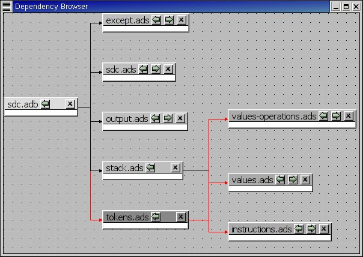
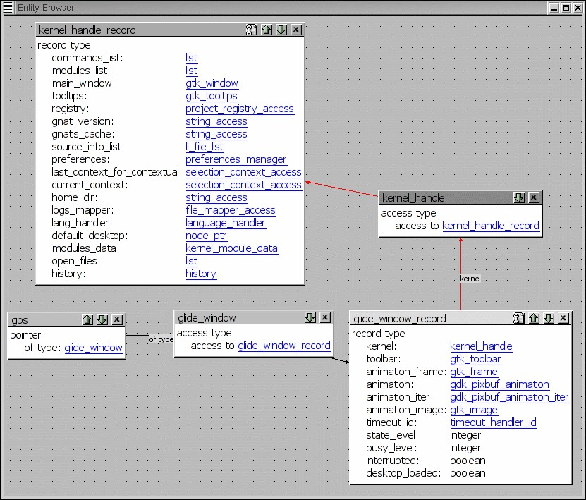

GPS contains several kinds of browsers, that have a common set of basic functionalities. There are currently four such browsers: the project browser (The Project Browser), the call graph (Call Graph), the dependency browser (Dependency Browser) and the entity browser (Entity Browser).
All these browsers are interactive viewers. They contain a number of items, whose visual representation depends on the type of information displayed in the browser (they can be projects, files, entities, ...).
In addition, the following capabilities are provided in all browsers:
Scrolling
When a lot of items are displayed in the canvas, the currently visible area might be too small to display all of them. In this case, scrollbars will be added on the sides, so that you can make other items visible. Scrolling can also be done with the arrow keys.
Layout
A basic layout algorithm is used to organize the items. This algorithm is layer oriented: items with no parents are put in the first layer, then their direct children are put in the second layer, and so on. Depending on the type of browser, these layers are organized either vertically or horizontally. This algorithm tries to preserve as much as possible the positions of the items that were moved interactively.
The Refresh layout menu item in the background contextual menu can be used to recompute the layout of items at any time, even for items that were previously moved interactively.
Interactive moving of items
Items can be moved interactively with the mouse. Click and drag the item by clicking on its title bar. The links will still be displayed during the move, so that you can check whether it overlaps any other item. If you are trying to move the item outside of the visible part of the browser, the latter will be scrolled.
Links
Items can be linked together, and will remain connected when items are moved. Different types of links exist, see the description of the various browsers.
By default, links are displayed as straight lines. You can choose to use orthogonal links instead, which are displayed only with vertical or horizontal lines. Select the entry orthogonal links in the background contextual menu.
Exporting
The entire contents of a browser can be exported as a PNG image using the entry Export to PNG... in the background contextual menu. It can also be exported in SVG format using the Export to SVG... entry.
Zooming
Several different zoom levels are available. The contextual menu in the background of the browser contains three entries: zoom in, zoom out and zoom. The latter is used to select directly the zoom level you want.
This zooming capability is generally useful when lots of items are displayed in the browser, to get a more general view of the layout and the relationships between the items.
Selecting items
Items can be selected by clicking inside them. Multiple items can be selected by holding the control key while clicking in the item. Alternatively, you can click and drag the mouse inside the background of the browser. All the items found in the selection rectangle when the mouse is released will be selected.
Selected items are drawn with a different title bar color. All items linked to them also use a different title bar color, as well as the links. This is the most convenient way to understand the relationships between items when lots of them are present in the browser.
Hyper-links
Some of the items will contain hyper links, displayed in blue by default, and underlined. Clicking on these will generally display new items.
Two types of contextual menus are available in the browsers: the background contextual menu is available by right-clicking in the background area (i.e. outside of any item). As described above, it contains entries for the zooming, selecting of orthogonal links, and refresh; the second kind of contextual menu is available by right-clicking in items.
The latter menu contains various entries. Most of the entries are added by various modules in GPS (VCS module, source editor, ...). In addition, each kind of browser also has some specific entries, which is described in the corresponding browser’s section.
There are two common items in all item contextual menus:
Hide Links
Browsers can become confusing if there are many items and many links. You can lighten them by selecting this menu entry. As a result, the item will remain in the canvas, but none of the links to or from it will be visible. Selecting the item will still highlight linked items, so that this information remains available.
Remove unselected items
Selecting this menu will remove all the items that are not currently selected. This is a convenient method to clean up the contents of the browser.
Remove selected items
Selecting this menu will remove all the items that are currently selected.
The call graph shows graphically the relationship between subprogram callers and callees. A link between two items indicate that one of them is calling the other.
A special handling is provided for renaming entities (in Ada): if a subprogram is a renaming of another one, both items will be displayed in the browser, with a special hashed link between the two. Since the renaming subprogram doesn’t have a proper body, you will then need to ask for the subprograms called by the renamed to get the list.

In this browser, clicking on the right arrow in the title bar will display all the entities that are called by the selected item.
Clicking on the left arrow will display all the entities that call the selected item (i.e. its callers).
This browser is accessible through the contextual menu in the project view and source editor, by selecting one of the items:
All boxes in this browser list several information: the location of their declaration, and the list of all their references in the other entities currently displayed in the browser. If you close the box for an entity that calls them, the matching references are also hidden, to keep the contents of the browser simpler.
Browsers->*Entity calls*
Display all the entities called by the selected entity. This has the same effect as clicking on the right title bar arrow if the item is already present in the call graph.
Browsers->*Entity is called by*
Display all the entities called by the selected entity. This has the same effect as clicking on the left title bar arrow if the item is already present in the call graph.
The contextual menu available by right-clicking on the entities in the browser has the following new entries, in addition to the ones added by other modules of GPS.
The dependency browser shows the dependencies between source files. Each item in the browser represents one source file.
In this browser, clicking on the right arrow in the title bar will display the list of files that the selected file depends on. A file depend on another one if it explicitly imports it (with statement in Ada, or #include in C/C++). Implicit dependencies are currently not displayed in this browser, since the information is accessible by opening the other direct dependencies.
Clicking on the left arrow in the title bar will display the list of files that depend on the selected file.
This browser is accessible through the contextual menu in the project view and the source editor, by selecting one of the following items:
This has the same effect as clicking on the right arrow for a file already in the browser, and will display the direct dependencies for that file.
This has the same effect as clicking on the left arrow for a file already in the browser, and will display the list of files that directly depend on that file.
The background contextual menu in the browser adds a few entries to the standard menu:
Open file...
This menu entry will display an external dialog in which you can select the name of a file to analyze.
Recompute dependencies
This menu entry will check that all links displays in the dependency browser are still valid. If not, they are removed. The arrows in the title bar are also reset if necessary, in case new dependencies were added for the files.
The browser is not refreshed automatically, since there are lots of cases where the dependencies might change (editing source files, changing the project hierarchy or the value of the scenario variables, ...)
It also recomputes the layout of the graph, and will change the current position of the boxes.
This menu entry indicates whether standard system files (runtime files for instance in the case of Ada) are displayed in the browser. By default, these files will only be displayed if you explicitly select them through the Open file menu, or the contextual menu in the project view.
This menu entry indicates whether implicit dependencies should also be displayed for the files. Implicit dependencies are files that are required to compile the selected file, but that are not explicitly imported through a with or #include statement. For instance, the body of generics in Ada is an implicit dependency. Any time one of the implicit dependencies is modified, the selected file should be recompiled as well.
The contextual menu available by right clicking on an item also adds a number of entries:
This will open a new item in the browser, displaying the complement file for the selected one. In Ada, this would be the body if you clicked on a spec file, or the opposite. In C, it depends on the naming conventions you specified in the project properties, but you would generally go from a .h file to a .c file and back.
These play the same role as in the project view contextual menu
The entity browser displays static information about any source entity.
The exact content of the items depend on the type of the item. For instance:
Ada record / C struct
The list of fields, each as an hyper link, is displayed. Clicking on one of the fields will open a new item for the type.
Ada tagged type / C++ class
The list of attributes and methods is displayed. They are also click-able hyper-links.
Subprograms
The list of parameters is displayed
Packages
The list of all the entities declared in that package is displayed
and more...
This browser is accessible through the contextual menu in the project view and source editor, when clicking on an entity:
Open a new item in the entity browser that displays information for the selected entity.
Most information in the items are click-able (by default, they appear as underlined blue text). Clicking on one of these hyper links will open a new item in the entity browser for the selected entity.
This browser can display the parent entities for an item. For instance, for a C++ class or Ada tagged type, this would be the types it derives from. This is accessible by clicking on the up arrow in the title bar of the item.
Likewise, children entities (for instance types that derive from the item) can be displayed by clicking on the down arrow in the title bar.
An extra button appear in the title bar for the C++ class or Ada tagged types, which toggles whether the inherited methods (or primitive operations in Ada) should be displayed. By default, only the new methods, or the ones that override an inherited one, are displayed. The parent’s methods are not shown, unless you click on this title bar button.